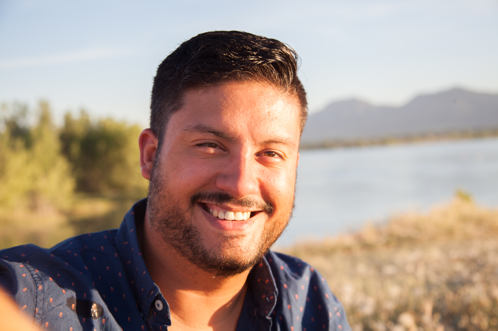

About Me
My name is Caleb Colon. I was born in Germany, raised in Texas, and live in Colorado. I have 2 resuce pups, Wally and Milo, and a cat named Millie. MIillie Clearly rules the roost.
Growing up in Texas, I played many sports and had many hobbies. I played mostly baseball and lacrosse through high school, and then kept playing lacrosse for the University of North Texas. After that I was fortunate enough to have the oppurtunity to coach my old high school team which included my brother.
Now as a "grown up" I enjoy playing and watching soccer. I also am driven by a desire to learn and improve myself. That is why I am attending coding bootcamp. I beleive that by increasing my knowledge, I can land a great job in a great field. I am excited to get to February and look back on all I've accomplished and built. More Importantly I am excited to build on the base of knowledge i will have at that point.